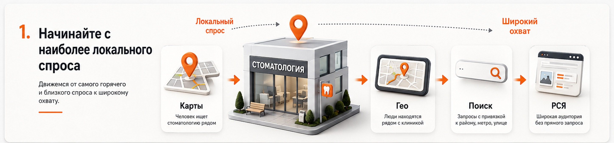
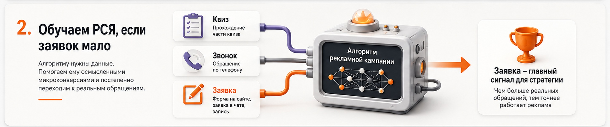
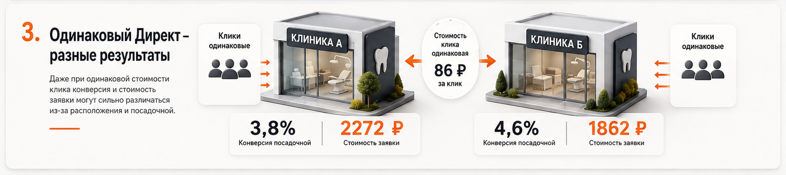

Блог о платном трафике
Яндекс Директ для стоматологии
Яндекс Директ для стоматологии может давать хороший поток пациентов, но я бы не начинал продвижение с обычной рекламы по запросам вроде «стоматология Москва».
В крупных городах это один из самых конкурентных сегментов, а сама услуга сильно привязана к местоположению клиники.
Я бы двигался от самого локального и горячего спроса к более широкому:
- Яндекс Карты и карточка организации.
- Геореклама в Картах, Навигаторе и Метро.
- Поисковые запросы с привязкой к району, улице или станции метро.
- Поиск по конкретным стоматологическим услугам.
- РСЯ и более широкие алгоритмические кампании.
Такая структура не гарантирует дешевую рекламу, но позволяет сначала выкупать аудиторию с наиболее понятным намерением, а уже затем расширять охват.

С чего я бы начинал рекламу стоматологии
Условно инструменты Яндекса можно разделить так:
- Карты и карточка клиники - человек уже ищет стоматологию рядом, объем небольшой.
- Геореклама - люди физически находятся или перемещаются рядом с клиникой, объем ограниченный.
- Локальный поиск - «стоматология на Кутузовском», «стоматолог возле метро...», объем небольшой, но точный.
- Обычный поиск - имплантация, протезирование, брекеты, лечение и другие услуги, объем средний.
- РСЯ - более широкая аудитория без прямого запроса в момент показа, объем большой.
В Директе сейчас можно отдельно работать с Карточками организаций, Картами и другими местами показа. Платное продвижение в Яндекс Бизнесе позволяет поднять организацию в результатах поиска Карт, а геомедийная реклама доступна в Картах, Навигаторе и приложении Яндекс Метро.
Для стоматологии это особенно полезно из-за выраженной локальности спроса. Человек может проехать через весь город ради сложной имплантации у конкретного врача, но обычное лечение, гигиену или первичный прием часто ищет ближе к дому или работе.
1. Сначала Карты и карточка стоматологии
Для локальной клиники я бы практически всегда начинал с Яндекс Карт.
Причина простая: человек, который уже набрал «стоматология рядом», «стоматология Крылатское» или открыл Карты и смотрит клиники вокруг себя, находится значительно ближе к выбору, чем случайный пользователь РСЯ.
Карточку организации нужно заполнить максимально подробно:
- направления лечения;
- адрес;
- часы работы;
- фотографии клиники;
- фотографии врачей;
- цены или понятный порядок их формирования;
- способы связи;
- актуальные акции, если они действительно есть;
- отзывы и ответы клиники на них.
Я бы сочетал обычное развитие карточки с платным продвижением через Яндекс Бизнес и рекламными размещениями в Картах и списке организаций в Поиске.
Это один из тех источников, который способен работать стабильно, но у него есть естественный потолок: количество людей, которые прямо сейчас ищут стоматологию рядом с конкретной точкой, ограничено.
Поэтому Карты я считаю обязательным базовым инструментом, но обычно не единственным.
2. Геореклама в Картах, Навигаторе и Метро
Для Москвы и других крупных городов я бы отдельно тестировал геомедийную рекламу.
У Яндекса есть пины и баннеры в Картах, форматы, связанные с маршрутами, а также баннеры в приложении Яндекс Метро. В Метро можно выбирать конкретные станции, возле которых находится организация.
Для стоматологии это интересная механика.
Например, клиника расположена в нескольких минутах от станции метро. Человек ежедневно ездит через эту станцию, живет или работает рядом. Даже если прямо сейчас он не ищет стоматолога, местоположение клиники постепенно становится для него знакомым.
Такую рекламу я рассматривал бы как дополнение к Картам и обычному Директу. Особенно для клиник с хорошим расположением около метро, крупных жилых комплексов или деловых районов.
3. Отдельная кампания на запросы с геопривязкой
Следующий сегмент - поисковые запросы, в которых пользователь сам указывает место.
Например:
- стоматология на Кутузовском;
- стоматология возле метро Сокол;
- стоматология Хамовники;
- стоматолог на Профсоюзной;
- имплантация зубов возле метро;
- детская стоматология в конкретном районе.
Объем такого трафика обычно небольшой, зато намерение очень понятное.
Если человек указывает район или станцию метро, местоположение явно является одним из критериев выбора. Для клиники, которая действительно находится в этом районе, такой запрос я бы считал одним из самых ценных.
В сети из нескольких филиалов я бы не сваливал их в одну общую кампанию. Лучше разделять рекламу хотя бы по точкам или группам соседних филиалов.
Посадочная страница тоже должна соответствовать географии: адрес, ближайшее метро, фотографии конкретной клиники, врачи, режим работы, схема проезда.
4. Поиск по стоматологическим услугам
После локальных запросов начинается обычная поисковая реклама:
- имплантация;
- протезирование;
- коронки;
- брекеты;
- элайнеры;
- лечение зубов;
- профессиональная гигиена;
- детская стоматология;
- удаление зубов;
- другие направления.
Здесь я бы обязательно разделял услуги.
У имплантации и обычной гигиены совершенно разная экономика. Отличаются средний чек, цикл принятия решения, допустимая цена пациента и конкуренция.
Нет смысла оценивать их одной средней стоимостью заявки.
Под крупные направления желательно делать отдельные посадочные страницы. Человек, который ищет имплантацию All-on-4, должен попадать на страницу про All-on-4, а не на главную страницу клиники с двадцатью видами лечения.
Но у поиска есть серьезный недостаток - цена.
Особенно это заметно в Москве и по дорогим стоматологическим услугам.
Пример из моего проекта по протезированию
Я продвигал две стоматологические клиники в Москве по протезированию и имплантации зубов.
Поиск тестировали отдельно по имплантации, коронкам, съемному протезированию и All-on-4. В конкретном проекте он получался слишком дорогим, поэтому основной бюджет в итоге перенесли в РСЯ.
За период с 12 сентября по 14 октября 2022 года две клиники получили 482 заявки из РСЯ. Средняя стоимость заявки составила 2113 рублей. Это исторические цифры конкретного проекта, а не ориентир стоимости лида на 2026 год.
Этот кейс хорошо показывает, почему нельзя заранее утверждать, что для стоматологии поиск обязательно будет главным каналом. Иногда именно РСЯ дает значительно более приемлемую экономику.
5. РСЯ: много потенциального трафика, но сложный запуск
После локальных источников и поиска начинается наиболее сложная часть - РСЯ.
У нее гораздо больше потенциальный охват, но и точность аудитории ниже.
Стоматология здесь конкурирует уже не только за человека, который прямо сейчас написал в поиске «поставить имплант». Алгоритму нужно самостоятельно понять, кто из миллионов пользователей потенциально может обратиться в клинику.
Поэтому результат очень сильно зависит от обучения кампании.
Я бы разделял РСЯ минимум по крупным направлениям с разной экономикой. Например, имплантацию не стоит смешивать с профессиональной гигиеной только ради увеличения количества конверсий.
Креатив и посадочная тоже должны продолжать одну и ту же мысль.
Если рекламируется имплантация, пользователь должен сразу видеть информацию про имплантацию, врачей, стоимость или порядок расчета цены и ближайшую клинику.
Стоит ли ограничивать РСЯ радиусом вокруг клиники
На бумаге это выглядит идеально.
В Яндекс Аудиториях можно создавать гиперлокальные сегменты на основе геолокации. Яндекс позволяет работать с областями радиусом от 500 метров, районами, улицами, станциями метро и конкретными объектами.
Казалось бы, для стоматологии достаточно поставить радиус 3 километра вокруг клиники и показывать рекламу только этим людям.
На практике я бы на такую механику полностью не полагался.
По моему опыту, геосегменты иногда работают значительно менее точно, чем ожидаешь. Поэтому использовать их стоит как отдельный тест, а не как единственную основу кампании.
Можно сделать отдельную РСЯ на гиперлокальный сегмент и сравнить ее с более широкой кампанией по фактическим обращениям.
Как обучать РСЯ, если заявок мало
Это одна из главных проблем стоматологии.
Для нормальной работы автоматической стратегии нужен регулярный поток целевых действий. Сам Яндекс рекомендует выбирать цель, которая достигается не реже примерно 10 раз в неделю. Чем больше данных получает стратегия, тем быстрее она обучается. На первичное обучение обычно требуется не меньше 1-2 недель.
В стоматологии это становится проблемой при небольшом бюджете.
Для московской клиники бюджет до примерно 150 000 рублей в месяц я бы уже считал небольшим именно с точки зрения обучения широких РСЯ-кампаний. Это не официальный порог Яндекса, а мое практическое наблюдение.
Предположим, реальная заявка стоит дорого и за неделю кампания получает всего несколько обращений. Алгоритму просто не хватает информации.
В такой ситуации можно временно помогать стратегии микроконверсиями.
Например:
- прохождение значительной части квиза;
- несколько осмысленных ответов в квизе;
- взаимодействие с калькулятором;
- глубокое изучение страницы услуги;
- сложная цель на вовлеченного пользователя.
Но микроконверсия не должна быть слишком простой.
Цель «открыл страницу» или «провел на сайте 10 секунд» достигается тысячами случайных людей и практически ничего не говорит алгоритму о вероятности реального обращения.
Нужен сигнал, который встречается достаточно часто, но при этом действительно связан с интересом к лечению.
По мере накопления реальных звонков и заявок приоритет нужно постепенно смещать именно на них.
Подробнее - в статье «Обучение стратегии в Яндекс Директе».

Не оптимизируйте рекламу только по заявке с сайта
Для стоматологии звонки часто являются одним из основных каналов обращения.
Поэтому минимальный набор аналитики я бы делал таким:
- отправка формы;
- звонки;
- заявки из квиза;
- запись через сайт;
- обращения через мессенджеры, если они используются.
Но и этого недостаточно.
Для бизнеса гораздо полезнее знать:
реклама → обращение → целевой пациент → запись → визит → лечение
Две кампании могут дать по 30 заявок, но первая приведет людей, которые действительно записываются на лечение, а вторая - тех, кто спрашивает только минимальную цену.
Поэтому при возможности я бы возвращал из CRM хотя бы статус квалифицированного обращения или состоявшейся записи.
Для этого полезны коллтрекинг для Яндекс Директа и сквозная аналитика Яндекс Директ.
Сайт стоматологии влияет на результат не меньше кампании
В стоматологии пользователь редко принимает решение только по рекламному объявлению.
Перед записью он может открыть сайт, посмотреть врачей, цены, фотографии клиники, отзывы и расположение, а затем вернуться к поиску и сравнить еще несколько вариантов.
Поэтому посадочная должна быстро отвечать на основные вопросы:
- какую услугу оказывает клиника;
- где она находится;
- кто будет лечить;
- сколько примерно стоит услуга или от чего зависит цена;
- как проходит лечение;
- какие варианты есть;
- как записаться;
- когда можно попасть на прием.
Для дорогих направлений хорошо работают отдельные страницы и более мягкие формы первого обращения.
В моем кейсе по протезированию использовался квиз из 5-6 вопросов. Пользователю было проще сначала ответить на вопросы и получить расчет, чем сразу звонить в клинику. Все 482 заявки в том проекте считались именно по отправке такого квиза.
При этом квиз сам по себе не делает рекламу эффективной. Нужно смотреть, сколько таких людей затем превращается в нормальные обращения и пациентов.
Один и тот же Директ может работать по-разному у двух филиалов
Еще один интересный результат того же кейса.
Для двух московских клиник цена клика в РСЯ была практически одинаковой:
- первая клиника - 86,78 рубля;
- вторая - 86,39 рубля.
Но конверсия посадочных страниц составила около 3,8% и 4,6%, поэтому средняя стоимость заявки различалась: 2272 и 1862 рубля.
Настройки рекламы были очень похожими.
Различалось местоположение клиник и окружающая их конкурентная среда.
Поэтому для сети стоматологий я всегда советую анализировать каждый филиал отдельно. Средний CPL по всей сети может скрыть то, что одна клиника работает отлично, а другая тянет общую статистику вниз.

Что делать, если кампания никак не начинает работать
С автоматическими кампаниями есть еще одна неприятная особенность.
Иногда технически все настроено нормально:
- аудитория подходящая;
- цели работают;
- бюджет есть;
- посадочная проверена;
- объявления прошли модерацию;
но кампания не набирает нормальных заявок.
Я иногда называю этот элемент работы с Директом лотереей.
Из своей практики я видел ситуации, когда одну и ту же кампанию приходилось запускать заново несколько раз. Настройки практически не менялись, но одна из следующих копий внезапно находила нормальную аудиторию и начинала стабильно приносить обращения.
Бывали проекты, где нормальная работа начиналась только после четвертого или пятого такого запуска.
Это не значит, что нужно одновременно создать пять одинаковых кампаний и заставить их конкурировать друг с другом.
Сначала нужно убедиться, что проблема действительно не в настройках, аналитике, сайте или слишком жестких ограничениях. Кампании также нужно дать время собрать данные.
Но если нормальная гипотеза несколько раз не может зацепиться за аудиторию, последовательный перезапуск через копию кампании я считаю вполне рабочим тестом.
Какой бюджет нужен стоматологии
Универсальной суммы здесь нет.
Стоматология в небольшом городе и московская клиника по имплантации находятся в совершенно разных рекламных аукционах.
Я бы считал бюджет не от абстрактного правила «стоматологии нужно 300 тысяч», а от конкретной услуги.
Нужно оценить:
- Какой поисковый спрос есть в регионе.
- Сколько примерно стоит трафик.
- Какой CPL может выдержать экономика услуги.
- Сколько конверсий необходимо стратегии для обучения.
- Сколько разных направлений вы собираетесь рекламировать.
Подробнее - в статье «Прогноз бюджета Яндекс Директ».
Если бюджет небольшой, я бы не создавал десять отдельных кампаний, каждая из которых получает по одной заявке в неделю.
Лучше выбрать несколько наиболее перспективных направлений и собрать по ним достаточно данных.
Модерация рекламы стоматологии
Стоматология относится к медицинским услугам, поэтому до запуска нужно подготовить документы.
Для рекламы медицинских услуг в России Яндекс требует копию медицинской лицензии с приложениями. Адрес оказания услуг в лицензии должен совпадать с адресом на сайте, а юридическое наименование - с указанным на сайте юридическим лицом.
В рекламе медицинских услуг также требуется предупреждение о противопоказаниях и необходимости консультации специалиста. В текстовой рекламе Яндекс может добавлять такое предупреждение автоматически, а в части графических и медийных форматов его необходимо предусматривать самостоятельно.
Лучше решить вопросы с лицензией и информацией на сайте до полноценного запуска, а не выяснять причины отклонения рекламы уже после подготовки кампаний.
Что я бы не делал при продвижении стоматологии
Есть несколько решений, которые выглядят логично, но регулярно создают проблемы.
Запускать только общий поиск
Кампания на широкие запросы вроде «стоматология Москва» может быстро съесть бюджет. Сначала я бы собрал Карты, локальный спрос и конкретные направления.
Смешивать все услуги
Имплантация, детская стоматология и чистка зубов - разные продукты с разной экономикой.
Смешивать несколько филиалов в одну статистику
Даже две клиники одного бренда могут давать разную стоимость пациента просто из-за расположения.
Оптимизироваться по слишком редкой цели
Если стратегия видит две заявки в неделю, ей практически не на чем учиться. Нужен либо больший объем, либо дополнительные качественные сигналы.
Использовать слишком простую микроконверсию
Алгоритм очень хорошо научится приводить людей, которые открывают страницу. Это совершенно не означает, что он научится приводить пациентов.
Смотреть только на CPL
Заявка в стоматологии еще ничего не гарантирует. Нужны данные хотя бы о качестве обращения и записи на прием.
Постоянно менять настройки
Автоматической стратегии требуется время на сбор данных. Если каждые несколько дней менять цели, бюджет, стратегию и структуру, понять реальную эффективность практически невозможно.
Как бы я запускал Яндекс Директ для стоматологии с нуля
Моя последовательность выглядела бы так:
- Проверить сайт, лицензию и карточку организации.
- Настроить Метрику, формы и коллтрекинг.
- Полностью оформить Яндекс Карты.
- Подключить платное продвижение карточки.
- Запустить локальные поисковые запросы по району, метро и улицам.
- Разделить основные стоматологические направления и протестировать обычный поиск.
- Для Москвы и крупных городов отдельно протестировать георекламу.
- Запустить РСЯ по наиболее экономически интересным услугам.
- При недостатке данных добавить осмысленные микроконверсии.
- Оценивать кампании по качеству обращений и записям, а не только по количеству форм.
- После накопления данных усиливать те сегменты, где появляется рабочая экономика.
В стоматологии особенно хорошо видно, что Яндекс Директ - это не одна рекламная кампания.
Карты решают одну задачу. Локальный поиск - другую. РСЯ дает дополнительный объем. Аналитика показывает, какие заявки действительно становятся пациентами.
Рабочая система получается тогда, когда все эти части собраны вместе и каждая оценивается по своей функции.
Частые вопросы
Что лучше для стоматологии - Поиск или РСЯ?
Заранее определить нельзя. Поиск работает с уже сформированным спросом, но в конкурентных городах может стоить очень дорого. РСЯ дает больший охват и иногда заметно более дешевый лид. В моем московском кейсе по протезированию поиск проиграл РСЯ, но переносить этот результат на любую стоматологию нельзя.
Можно ли рекламировать только стоматологию рядом с клиникой?
Да. Для этого подходят Карты, локальные поисковые запросы и гиперлокальные аудитории. Но я бы не ограничивал всю рекламу одним радиусом вокруг клиники. Такой сегмент лучше тестировать отдельно.
Нужен ли стоматологии коллтрекинг?
Если пациенты заметно чаще звонят, чем оставляют формы, нужен. Без него часть обращений останется без правильного источника, а Директ будет получать неполные данные для оптимизации.
Можно ли запустить Директ без большого бюджета?
Можно, но количество одновременно тестируемых гипотез придется ограничить. При небольшом бюджете лучше собрать достаточно статистики по нескольким основным направлениям, чем распределить деньги между множеством кампаний, каждая из которых практически не получает конверсий.